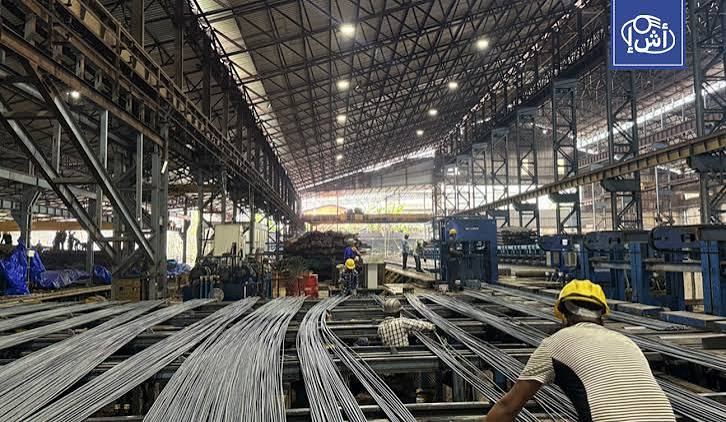
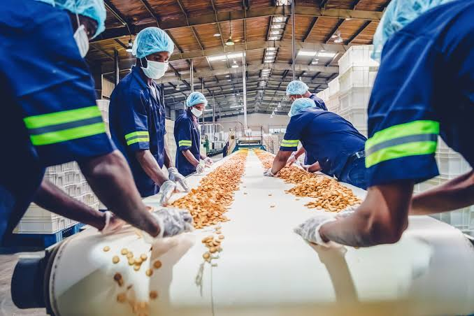
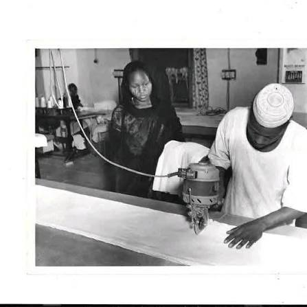
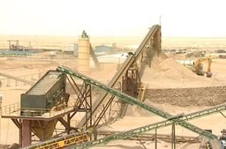
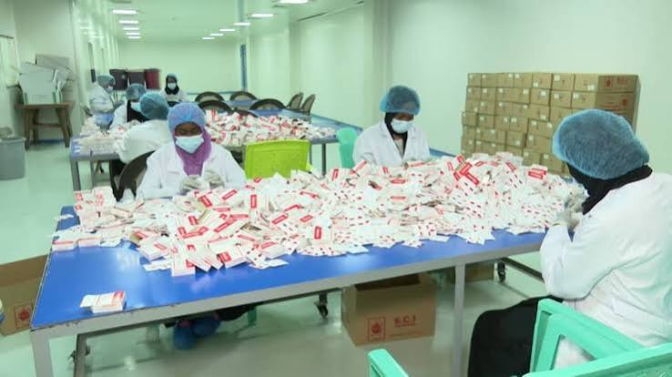

Discover
Sudan
Discover
Sudan
Discover
Sudan
Discover
Sudan

>تعد الصناعة في السودان واحدة من القطاعات الرئيسية التي تعتمد على الموارد الطبيعية والزراعية والمعدنية الغنية التي تمتلكها البلاد. وهناك العديد من الصناعات المتنوعة، مثل الصناعات الغذائية، وصناعة السكر، والزيوت، وصناعة الجلود، والمنسوجات، وفروع صناعات مواد البناء، والأدوية. وتساهم هذه الصناعات بشكل كبير في توفير فرص العمل ودعم الاقتصاد الوطني من خلال الاستفادة من الموارد المحلية وتحويلها إلى منتجات ذات قيمة مضافة كبيرة. ورغم وجود التحديات التي يواجهها القطاع الصناعي في السودان، فإن البلاد تملك إمكانات كبيرة تؤهله لأن يصبح من الدول الرائدة في مجال الصناعة، شريطة توافر الاستثمارات وتطوير البنية التحتية، وهو ما سيفتح آفاقًا واسعة للنمو الاقتصادي والتنمية المستدامة في المستقبل.
تستعرض هذه الصفحة اهم القطاعات الصناعية التي الأستثمار بها في السودان
تعد الصناعات الغذائية من أهم القطاعات الصناعية في السودان، لأنها تعتمد على الموارد الزراعية والحيوانية التي يتميز بها البلد. تشمل هذه الصناعات إنتاج السكر، والزيوت النباتية، والدقيق، والألبان، والعصائر، والمشروبات. بالإضافة إلى ذلك، تشمل الصناعات الغذائية تعليب الخضروات والفواكه. يسهم هذا القطاع في توفير الغذاء، وتقليل الاعتماد على الواردات، وخلق فرص عمل. كما يدعم هذا القطاع الصادرات من خلال تصنيع المنتجات الزراعية وإضافة قيمة اقتصادية لها.

تعد صناعة النسيج والملابس من أهم الصناعات في السودان. تعتمد هذه الصناعة بشكل كبير على القطن الذي يُزرع في السودان، ويُعتبر من بين أفضل أنواع القطن في العالم. تشمل هذه الصناعة عدة مراحل، مثل صنع الخيوط، والأقمشة، والملابس، والمفروشات المنزلية. يساهم هذا القطاع في دعم الاقتصاد السوداني بطرق مختلفة.، يوفر فرص عمل للناس في مصانع النسيج والملابس. ثانياً، يشجع على زراعة المزيد من القطن، مما يساعد المزارعين في السودان. ثالثاً، يعمل على زيادة قيمة القطن عن طريق تصنيعه، بدلاً من بيع القطن الخام. هذا يعني أن السودان يمكن أن يباعث منتجاته إلى بلدان أخرى، ويحصل على أموال أكثر من تلك المنتجات.

الصناعات التعدينية تعد الصناعات التعدينية من أهم القطاعات الصناعية في السودان، وذلك بسبب تنوع الموارد المعدنية في البلاد. وتشمل استخراج ومعالجة الذهب، والحديد، والكروم، والمنغنيز، والنحاس، والرخام. ويسهم هذا القطاع في زيادة الصادرات، وتوفير فرص العمل، وجذب الاستثمارات، كما يمثل أحد المصادر المهمة لدعم الاقتصاد الوطني وتنمية الصناعات المرتبطة بالمعادن.

تعد الصناعات الكيميائية من القطاعات الصناعية المهمة في السودان، وتشمل إنتاج الأسمدة، والصابون، والمنظفات، والدهانات، وبعض الأدوية والمنتجات الكيميائية الأخرى. ويساعد هذا القطاع في تلبية احتياجات السوق المحلية، ودعم القطاعين الزراعي والصناعي، وتقليل الاعتماد على المنتجات المستوردة، مما يسهم في تعزيز الاقتصاد الوطني.
